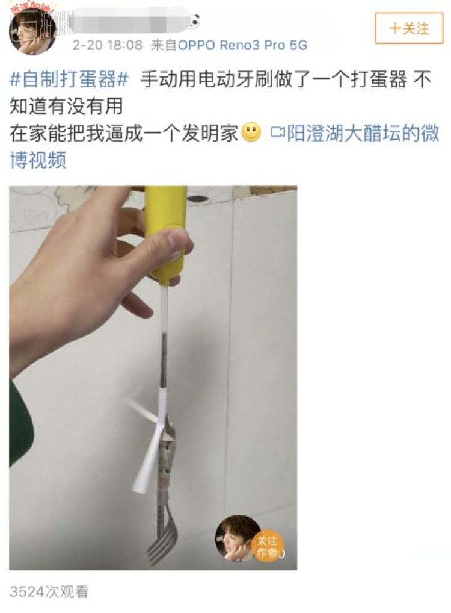
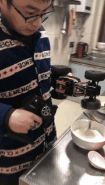
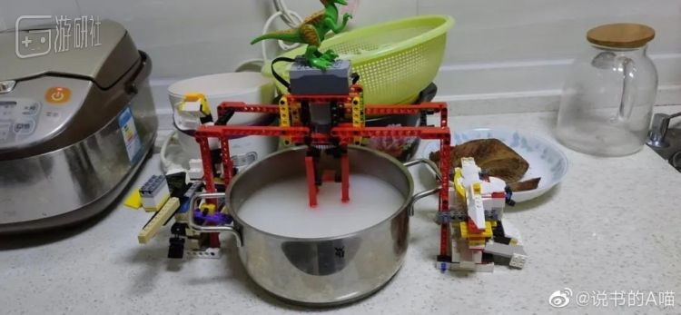
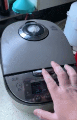
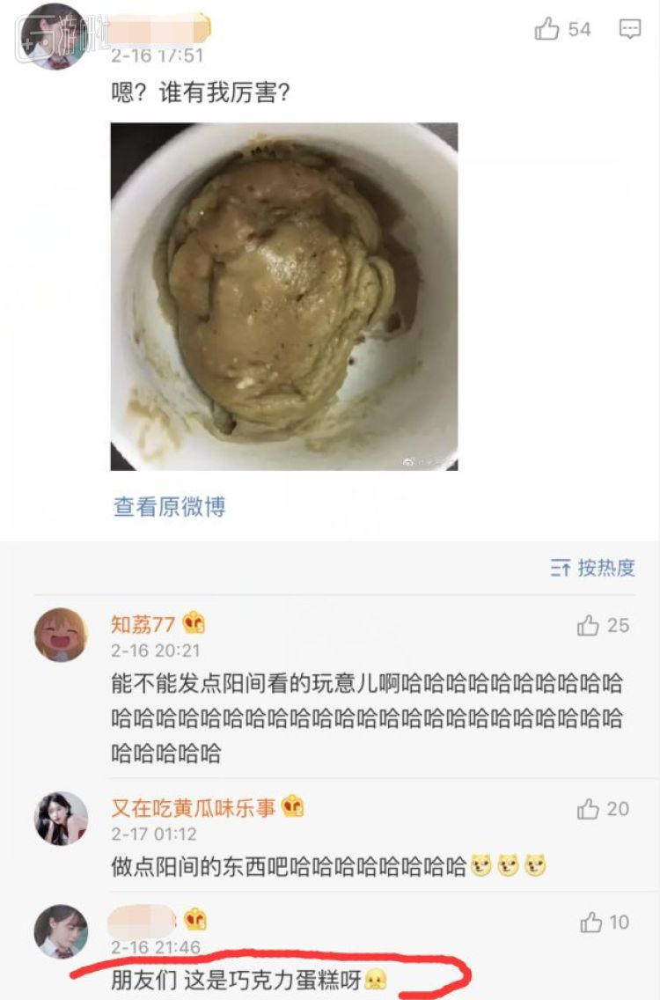
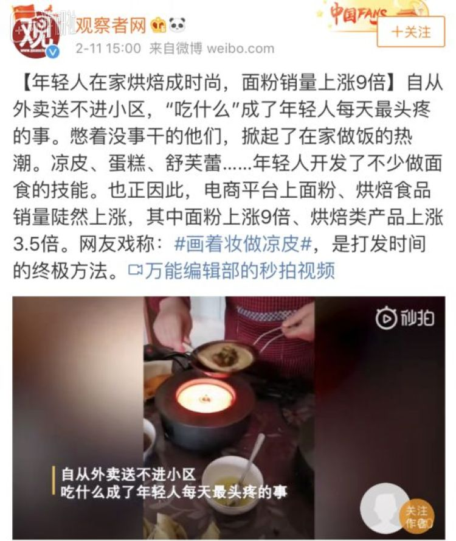
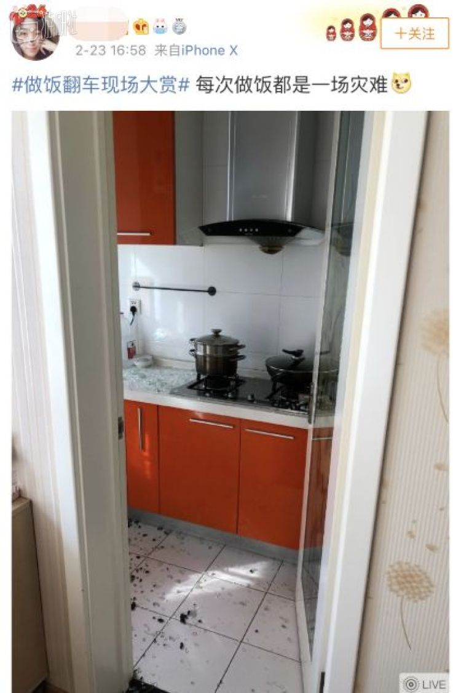

疫情时期的爱情
原文链接 备份链接 爱情始终是爱情，距离生死越近，爱就越浓郁。新冠肺炎疫情，强行打断了时间的连接，在隔离、空白和生死间，将日常生活的本质的呈现出来。疫情时期的爱情，与此前此后都是不一样的。 封城前，他花了三个小时买回来一个蛋糕 2月2 …
疫情期间，所有被迫关在家的人不得不面临一个重要的生存问题：吃什么。
第一梯队的方面食品在这个时候早就已经被摧枯拉朽般消耗殆尽，进阶级的“家常菜”梯队在重压下也锻炼出来了不少新战士。
但这还远远不够，最近一段时间，朋友圈那帮神仙们终于把魔爪伸向了“烘焙”。
准备工作
2月中旬，湖南卫视主持人何炅在一档综艺节目中，演示自己如何用身边常见的东西来制作小蛋糕。一时间，何炅的小蛋糕开始被许多网友争相模仿，还登上了微博热搜。
此时，过年期间的“凉皮热潮”已经退居二线，烘焙热潮的第一个冲锋号算是吹响了。
细想来，烘焙能在这个时候神奇的成为了厨房新宠，不是没有道理。
这段期间想要挑战厨房的人民群众主要有两大核心需求：一是要足够消耗时间；二是要获得高于“家常菜”的烹饪品质（最好还能发朋友圈）的东西。如此，工序简单、难度不大（看起来）的烘焙就成了这个世界线收束的必经之路。
但一切的前提，是要顺利进行烘焙过程中最关键的准备工作——打蛋——只有将分离出来的蛋清搅拌成奶油状，这样做出来的蛋糕才能更加暄软。2020年，打蛋这种机械的工作如果还要人类抽搐自己的双手来进行，就未免太不体面了。可是电动打蛋器对于中国厨房而言，又不普及，咋办？
呵呵，这点难度，在人民群众的智慧面前，无非是再一次给他们大肆发挥主观能动性的机会。
看吧，很快中国各个不知名的角落里，一个个“迷之打蛋器”如雨后春笋般腾空出世了：
用塑料瓶制成的打蛋器是现在网络上最常见的，也是一些美食博主推荐的常用方法。不过为了提高效率，有人还想出了更硬核的手段——将电钻改造成打蛋器。
电钻这方法听上去诡异，实际效果很好，相比于其他自制打蛋器，这个办法在社交媒体上的受欢迎程度甚至仅次于塑料瓶。
不过电钻也不是家家都有，又有人犯难了，难道没有替代品吗？哼，咱国产网友有的是办法，您瞧着：

电风扇做打蛋器的成功就像一个科学里程碑，这意味着，但凡能转的，能震动的，都有做成打蛋器的潜质。
于是一次机械朋克向的改装风刮起来了：

剃须刀，电动牙刷这些都是可以震动的物品，拆解安装一下都能做打蛋器。

好的上面这些我还是可以理解的了，可是下面这个是什么玩意？
四驱车打蛋器？！

看见了吗，只要是能转的玩具，几乎没有一个能脱离苦海，全都拖不过要被充公拿去劳改。

仔细看，这个东西其实是用来转陀螺的↓
太惨烈了，他们还都是孩子（们玩的玩具）啊。
尽管不排除其中有人只是借机作秀，但网友这解决问题的阵势，如果继续发展下去，后果恐不堪设想：
想象一下吧，当老外走在大街上，看见中国老百姓从手上掏出这个玩意，会有什么感叹——
实操
准备工作解决后，一切准备就绪，下面就要拿出真本事了。
那么，烹饪神仙们有本事吗？
可太有了↓
3，
2，
1，美妙的一刻开始了：

“安倍怕了，奥巴马惊了，特朗普急了。”
惊悚惊悚在，老外永远想不到，一个普普通通的厨用电器，在经过中国老百姓的改装后，可以发挥出多么大的杀伤力。

他们同样想不到的是，一个仅靠“烘焙”制成的食物，能够在形态上存在着多么丰富的可能性。
中国的厨房中，似乎蕴藏着比精密化学实验室的更多更刁钻的催化物质。
同样的设备，不同的结果，这就是腰间盘突出的“烘焙匠人”们能探索到的碳水化合物状态的极限：
看上去很难拔下来

那么，除了在物理形态上做文章，“烘焙匠人”在烘焙产品的视觉感官上有没有建树呢？
你好，有的。
比如下面这个。就算是块电饭煲蛋糕，它也能做出让人不适的形状。

本身形状没有问题的，也要努力朝着奇怪的方向发展。
一位网友用一句话总结了自己做面点的经历，收获了上千个赞：
与此同时，“烘焙”产物的近亲们日子也不算好过。惨烈状况几乎不能用成句的语言描述，只能汇聚成一个个代表性的名词：
“地狱包子”。

“涅槃面包”。
“实在编不出来词的油条”。
我仿佛能看到烹饪圈“面点黑暗帝国”的迷雾正从空中浩荡袭来。
因为时间充足，广大网友对面食的研究似乎没有浅尝辄止的迹象。根据官方报道，疫情期间面粉销量上涨9倍，有媒体甚至打出了“面粉销量堪比口罩”的标题。

如今凉皮蛋糕的热度不减当时，油条刚刚“上位”成功，台下还有双皮奶、珍珠奶茶、舒芙蕾等等“选手”蓄势待发。看起来国人对于食物的热情，伴随着疫情的发展，一时半会看来还难以散去。
或许等疫情结束，人人都变身“大厨”，餐厅也无需担忧，厨子们也不用焦虑，忙碌的工作肯定会让大家重新聚集在原来的地方，一切依然会回到原来的轨迹上。
只是，这一切都要寄希望于，自家厨房能够撑到那一天的到来。

原文链接 备份链接 爱情始终是爱情，距离生死越近，爱就越浓郁。新冠肺炎疫情，强行打断了时间的连接，在隔离、空白和生死间，将日常生活的本质的呈现出来。疫情时期的爱情，与此前此后都是不一样的。 封城前，他花了三个小时买回来一个蛋糕 2月2 …
原文链接 备份链接 我是肖途，2019 年加入 “BIE别的” 团队的编辑，武汉人。节前，我在最后一刻退掉了回武汉的车票，但这不代表我的春节过得有丝毫轻松。我的爸爸妈妈在武汉，我每天只能与他们视频通话。 早上醒来，北京下过雪了，一场没由来 …
原文链接 备份链接 滞留的剧组成员（左二为邵进）。图片由受访者提供 _“有一天，快到中午的时候，我在电梯里碰到刚下班的护士们。那是几个90后女孩，正在讨论是先洗澡还是先吃泡面。一个女孩说，肯定要先洗澡，因为要除菌嘛。另一个女孩说，可是真的 …
原文链接 备份链接 你已选中了添加链接的内容 28.02.2020本文字数：2336，阅读时长大约4分钟 导读：压力大的是，员工的工资、社保开支，物流成本也高涨，另外，医用防护服的辅料即将用尽，但上游企业复工率尚低，难以采购。 作者 | …
原文链接 备份链接 这是一种全新的病毒，还有很多未知。它代表了一种演进的公共卫生突发事件，我们还会在其他国家看到更多确诊病例。中国对传染病以及卫生突发事件的诊断、治疗和管理能力在过去20年得到了显著的提升。 文 |《财经》记者 江玮 发自 …